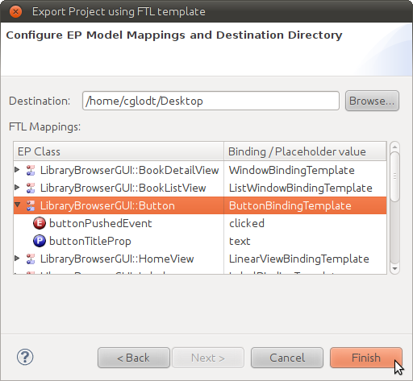

Generating Android and iPhone applications using FTL
Here we give a tutorial on how to:
- Import the LibraryBrowser EP model into Democles; and
- generate mobile applications for both the Android and iPhone platforms from the EP model.
- Each platform has a catalogue of FTL templates;
- the applications are generated by instantiating templates from the platform's FTL catalogue.
Importing the Example Project
Having installed Democles, download the LibraryBrowser example:
Import it into your workspace by choosing File→Import..., then selecting the General→Existing Project into Workspace option. After selecting the downloaded project archive and clicking Finish, the project will be available in the workspace.
Pre-generated Sources
We make pre-generated sources of this example project available for the benefit of those that want to try out the application or that want to see the generated ObjC resp. Java source code, without having to install Democles:
- LibraryBrowser-android.zip: A zipped Eclipse project containing generated Android code for the LibraryBrowser application.
- LibraryBrowser-iPhone.zip: A zipped Xcode project containing generated iPhone/iOS code for the LibraryBrowser application.
The LibraryBrowser
The LibraryBrowser application is a proof-of-concept mobile application that allows searching a virtual library. Using FTL-based code generation, it can be run on two popular mobile platforms:
- Android (tested version: 2.2)
- iPhone (tested version: iPhone Simulator 3.1.3)
Running the Android version
After the example project has been imported, follow these steps:
Open the context menu of the LibraryBrowser project and choose Export.... Then choose Other→Democles Project using FTL. Click Next.
Make sure the LibraryBrowser project is chosen, and the ANDROID target platform is selected:
Click Next.
Observe that for each Domain marked as a "Binding Domain", a corresponding template subcatalogue has been selected:
Concepts in an EP Domain can only be mapped to implementations in their selected template subcatalogue. Click Next to proceed.
The next wizard page shows the mapping of EP model concepts to template catalogue concepts:

A working configuration is included with the example project. Choose a destination folder for the generated code, then click Finish.
Note: The chosen destination folder should be located outside of your Eclipse workspace.
Import the generated project into the workspace of an Eclipse installation configured with a working ADT (Android Development Tools) plugin and Android SDK using the File→Import...→Existing Projects into workspace wizard.
Run the imported project by choosing Run As→Android Application from its context menu. The application's screens look as follows:
Running the iPhone version
After the example project has been imported, follow these steps:
Open the context menu of the LibraryBrowser project and choose Export.... Then choose Other→Democles Project using FTL. Click Next.
Make sure the LibraryBrowser project is chosen, and the IPHONE target platform is selected:
Click Next.
Observe that for each Domain marked as a "Binding Domain", a corresponding template subcatalogue has been selected:
Concepts in an EP Domain can only be mapped to implementations in their selected template subcatalogue. Click Next to proceed.
The next wizard page shows the mapping of EP model concepts to template catalogue concepts:
A working configuration is included with the example project. Choose a destination folder for the generated code, then click Finish.
Open LibraryBrowser.xcodeproj in the generated Xcode project on a system that has the iPhone SDK and Xcode installed.
Choose Project→Set Active SDK→iPhone Simulator 3.x to set the used iPhone SDK version to one that is available on your system.
Run the imported project by clicking Build and Go in Xcode's toolbar. The application's screens look as follows: